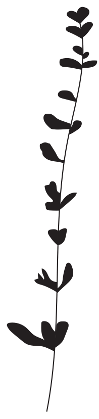

NATY ROCCA
soy Naty
Estos son mis trabajos, mis pasiones y mi inspiración. Estoy en un camino de búsqueda constante. Cada vez mas enfocada a mi deseo.
Mi recorrido fue variado. Trabajé muchos años en publicidad y cine, en las áreas de producción y vestuario. Estudié joyería y cincelado. Hace seis años me interesé fuertemente en los textiles. Fue en este periodo cuando descubrí el mundo de los tintes naturales y quedé fascinada por sus colores. Es por eso que sigo estudiando, explorando y transmitiendo esta técnica ancestral. Sigo abriendo camino a lo nuevo, porque, como ya dije, mi búsqueda es constante.
" Actualmente llevo a cabo mi proyecto
FRUTO y doy talleres de iniciación a los tintes naturales "
FRUTO
FRUTO es una marca de muñecos y objetos para niños y niñas realizados a mano, con fibras y tintes naturales. Revaloriza el trabajo artesanal y fomenta el contacto con la naturaleza y el cuidado del medioambiente. Creo que es importante que los chicos se conecten desde pequeños con la naturaleza, por eso elijo trabajar con materiales nobles, puros y una técnica muy antigua y hermosa como la de los tintes naturales. Además, cada uno de los muñecos de FRUTO es un personaje con un mundo particular, que cuenta mi visión y experiencia sobre la crianza y la infancia.
.jpg "foto munieca")
.jpg "foto oso")
.jpg "foto todos")
.jpg "foto azu")
"Sigo abriendo camino a lo nuevo,
porque, como ya dije, mi búsqueda es constante. "
TINTES NATURALES
Mi relacion con los TINTES NATURALES arrancó, como FRUTO, con el nacimiento de mi hija, Azul. Una de las primeras decisiones que tomé cuando empecé con este proyecto fue la de utilizar materiales nobles para realizar mis muñecos. Siempre me pareció importante que los niños estén en contacto con estos materiales desde pequeños. Que puedan ver y sentir estas texturas. Esta es una de mis formas de acercar a la infancia con la naturaleza.⠀⠀⠀⠀⠀